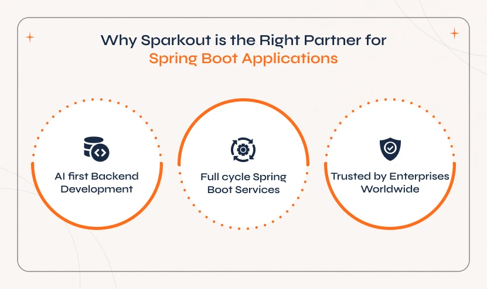

In today's fast-moving digital landscape, businesses need applications that are not just reliable but also scalable and quick to launch. That's why many are exploring how to build and deploy Spring Boot applications to meet modern demands. The Spring Boot framework in Java comes in. It is not just another developer tool, it's a powerful framework that helps companies bring their ideas to life faster. You can think of Spring Boot as a shortcut for building apps in Java without compromising on performance and security.
For those businesses who don't want to spend hours setting things up from scratch, they can opt for Spring Boot as the go-to choice. Whether it's powering backend services, enterprise platforms, or scalable microservices, it offers the speed and structure needed for modern businesses.
What is Spring Boot All About?
Spring Boot is a framework built on top of Java and makes it much easier and faster to develop applications. Unlike traditional Java applications that required a lot of setup and configuration, which in turn slowed down development, Spring Boot primarily removes the repetitive tasks by offering pre-configured templates and tools. With this, developers can focus more on writing the actual logic of the app.
Top 10 Reasons Why Developers Love Spring Boot Development
1. Minimal Configuration Required
Spring Boot removes boilerplate code and XML configurations, allowing developers to start building right away.
2. Quick Development & Deployment
With built defaults and auto-configuration, it speeds up the development process.
3. Built for Scalability
Spring Boot is ideal for building everything from small services to large enterprise applications.
4. Seamless Integration with Tools
Works effortlessly with Spring Boot build tools like Maven and Gradle, streamlining project management.
5. Microservices Ready
Perfect for building distributed, modular applications using microservices architecture.
6. Production-Ready Features
Spring Boot offers built-in monitoring, health checks, and metrics for smooth production deployment.
7. Embedded Server Support
There is no need for an external setup, as it comes with built-in servers like Tomcat or Jetty.
8. Strong Ecosystem
Spring Boot leverages the powerful Spring ecosystem, such as Spring MVC, Spring Data, Spring Security, etc.
9. Cloud & AI Agent Ready
It supports building backend services for cloud-native applications and AI agent development tools.
10. Active Community & Support
Supported by a large, active community with well-maintained and extensive documentation.
Spring Boot Development Environment: What You Need to Start
It is vital to set up a development environment before building an application with Spring Boot for smooth and efficient coding. Here is what you will need:
1. IDEs (IntelliJ, Eclipse)
You need an Integrated Development Environment (IDE) like IntelliJ IDEA or Eclipse. These tools offer features like intelligent code completion, debugging support, and built-in terminal access to make the development process much easier.
2. JDK and Maven/Gradle
Spring Boot runs on Java, and it is vital to install the latest Java Development Kit (JDK). Besides, you also need to build automation tools like Maven or Gradle to manage dependencies, compile code, and package your application.
3. Spring Initializr
Spring Initializr, a web-based generator, is vital for starting your project. It helps you create a basic Spring Boot project in a few clicks. You can even choose a build tool like Maven or Gradle, Java version, and the required dependencies. When generated, you can import it into your IDE, and with that, you shall start coding.
How to Build a Spring Boot Application [Step-by-Step Guide]
Ensure the following tools are installed and properly configured:
| Tool | Required Version | How to Check |
|---|---|---|
| Java JDK | 17 or higher | java -version, javac -version |
| Apache Maven | 3.8 or higher | mvn -version |
| IDE | IntelliJ, VS Code | For development ease |
# java version "17.0.x"
# javac 17.0.x
# Apache Maven 3.9.x
Step-by-Step Project Setup
The very first step is to create a new folder for your project and navigate into it. This project directory will hold your application files. To create a project directory:
mkdir myapp
cd myappThis step involves creating the Maven project description file that defines the core configuration of your Spring Boot application. It includes Spring Boot project metadata, starter parent, essential dependencies, and the build plugin required to package and run the application.
To create a file named pom.xml in the root directory:
<project xmlns="http://maven.apache.org/POM/4.0.0"
xmlns:xsi="http://www.w3.org/2001/XMLSchema-instance"
xsi:schemaLocation="http://maven.apache.org/POM/4.0.0
http://maven.apache.org/xsd/maven-4.0.0.xsd">
<modelVersion>4.0.0</modelVersion>
The following tags, like groupId, artifactId, version, packaging, and project name/description, uniquely identify your project:
<groupId>com.example</groupId>
<artifactId>myapp</artifactId>
<version>0.0.1-SNAPSHOT</version>
<packaging>jar</packaging>
<name>myapp</name>
<description>Spring Boot Application</description>The code spring-boot-starter-parent represents the parent tag that lets you inherit default configurations, dependency versions, and plugins from Spring Boot:
<parent>
<groupId>org.springframework.boot</groupId>
<artifactId>spring-boot-starter-parent</artifactId>
<version>3.2.0</version>
<relativePath/>
</parent>The following code will fetch the necessary libraries for building and testing your web application.
The <dependencies> section includes
spring-boot-starter-web that covers everything needed to build web and RESTful applications using Spring MVC.
Spring-boot-starter-test to add libraries like JUnit and Mockito for writing unit & integration testing.
<dependencies>
<!-- Web Starter -->
<dependency>
<groupId>org.springframework.boot</groupId>
<artifactId>spring-boot-starter-web</artifactId>
</dependency>
<!-- Optional: Test Starter -->
<dependency>
<groupId>org.springframework.boot</groupId>
<artifactId>spring-boot-starter-test</artifactId>
<scope>test</scope>
</dependency>
</dependencies>To add the Spring Boot build plugin to build an executable JAR and run your app with the help of Maven commands, use the code below:
<build>
<plugins>
<plugin>
<groupId>org.springframework.boot</groupId>
<artifactId>spring-boot-maven-plugin</artifactId>
</plugin>
</plugins>
</build>
</project>Upon completing this step, you have prepared your project to compile, build, and run as a Spring Boot web application.
<project xmlns="http://maven.apache.org/POM/4.0.0"
xmlns:xsi="http://www.w3.org/2001/XMLSchema-instance"
xsi:schemaLocation="http://maven.apache.org/POM/4.0.0
http://maven.apache.org/xsd/maven-4.0.0.xsd">
<modelVersion>4.0.0</modelVersion>
<groupId>com.example</groupId>
<artifactId>myapp</artifactId>
<version>0.0.1-SNAPSHOT</version>
<packaging>jar</packaging>
<name>myapp</name>
<description>Spring Boot Application</description>
<parent>
<groupId>org.springframework.boot</groupId>
<artifactId>spring-boot-starter-parent</artifactId>
<version>3.2.0</version>
<relativePath/>
</parent>
<dependencies>
<!-- Web Starter -->
<dependency>
<groupId>org.springframework.boot</groupId>
<artifactId>spring-boot-starter-web</artifactId>
</dependency>
<!-- Optional: Test Starter -->
<dependency>
<groupId>org.springframework.boot</groupId>
<artifactId>spring-boot-starter-test</artifactId>
<scope>test</scope>
</dependency>
</dependencies>
<build>
<plugins>
<plugin>
<groupId>org.springframework.boot</groupId>
<artifactId>spring-boot-maven-plugin</artifactId>
</plugin>
</plugins>
</build>
</project>This step involves manually creating the standard source directory layout required for a Spring Boot application. This ensures that your code and resources are well-organized for Maven to compile and run your project.
This path, mkdir -p src/main/java/com/example/myapp includes all your application’s Java classes, such as controllers, main app class, services, etc.
Use mkdir -p src/main/resources' to place configuration files, such as' application.properties', and static files as needed.
Creating a main class is the entry point of your Spring Boot application. This is the main class responsible for bootstrapping the application. It performs actions like auto-configuration, component scanning, and other Spring Boot features.
This step involves creating a file named myapp/MyappApplication.java in your package directory.
File: src/main/java/com/example/myapp/MyappApplication.java
This class has main( ) method and to activates Spring Boot features @SpringBootApplication annotation.
SpringApplication.run launches your application, set up the Spring context, and get starts with the embedded service such as Tomcat.
package com.example.myapp;
import org.springframework.boot.SpringApplication;
import org.springframework.boot.autoconfigure.SpringBootApplication;
@SpringBootApplication
public class MyappApplication {
public static void main(String[] args) {
SpringApplication.run(MyappApplication.class, args);
}
}With this class, your application will have a valid entry point that Spring Boot can run. Now, you can go ahead building features like REST controllers and services.
To handle HTTP requests, it is vital to create a basic REST controller and this steps does the same. This section stands as your first endpoint where you can test if or not your Spring Boot application is working accurately.
Begin with creating a file named HelloController.java inside your main Java package.
File: src/main/java/com/example/myapp/HelloController.java
This controller connects a simple HTTP GET request to a response string.
@RestController implies the class as a RESTful controller while
@GetMapping("/hello") maps GET requests to /hello to the sayHello() method.
sayHello() method is used to return a plain string as the response (Hello, created from scratch!), which is converted into an HTTP response body atomatically.
package com.example.myapp;
import org.springframework.web.bind.annotation.GetMapping;
import org.springframework.web.bind.annotation.RestController;
@RestController
public class HelloController {
@GetMapping("/hello")
public String sayHello() {
return "Hello, created from scratch!";
}
}When your application is running, then it means your Spring Boot app and basic REST API are working.
To manage application-level settings like server port, database connections, logging levels, etc., Spring Boot uses a configuration file named application.properties (or application.yml).
Inside the resources directory, create a new file named:
File: src/main/resources/application.properties (You can leave it empty or add custom settings like port)
You can either leave it empty or specify basic settings like changing the default port. By default Spring Boot runs on port 8080 and uncommenting server.port=8081 changes the server to listen to port 8081.
You can later use this file to define database connection propertise, caching configs, logging levels, and environment-specific variables.
properties
# Optional configuration
# server.port=8081As a result, your application will read from application.properties everytime it starts and you can even customize behavior without changing the Java code.
Now, your code and configuration are ready and it’s time to compile the project and launch the Spring Boot application. During this step, an executable .jar file gets created and it runs on Java.
Ensure you are in the root folder where the pom.xml file is located.
From the root directory:
cd myappThis command clears previous builds if any and packages your application into a .jar file.
mvn clean packageThis compiles your code and dependencies into a JAR file under target/.
After successful build, you shall launch the application using:
java -jar target/myapp-0.0.1-SNAPSHOT.jarjava -jar … this starts your Spring Boot app with the help of built-in server which is usually Tomcat. Thus you will see logs printed in console that ends with Tomcat started on port(s): 8080
When your application is running, it’s now time to verify that everything works correctly by testing the REST endpoint that you have created already.
Access the /hello endpoint by visiting the following URL:
http://localhost:8080/helloIf the setup is correct, then you should see this message in your browser or API response:
Hello, created from scratch!This means your application started without errors, and the HelloController is working as expected. Besides, the /hello endpoint is reachable and returning the accurate responses.
With the above screen, you have successfully built and tested your first Spring Boot application from scratch. You can further process this by adding more endpoints, connecting to databases, or secure your app.
Spring Boot Deployment Guide
Putting your Spring Boot application into action means choosing the right deployment method. No matter if you are building a chatbot development platform, an AI-powered tool, or a full-scale enterprise solution, deployment strategies play a major role in performance, scalability, and uptime. Check out the most commonly used deployment methods:
Method 1: Deploy on a Virtual Machine using AWS EC2
Deploying a Spring Boot application on AWS E2C is the most reliable and flexible option to manage your infrastructure. This is because the E2C (Elastic Compute Cloud) offers scalable virtual servers in the cloud. With this, it is easy to create a Linux based instance, access it on SSH, and set up your runtime environment. Thus this approach gives complete control over your deployment and is ideal for the developers who are looking to configure security groups, storage, and networking settings.
With EC2 instance ready, Java JDK 17+ can be installed and Spring Boot .jar file can be transferred using SCP, and the application can be launched using command line. Upon opening the port 8080 in the security group makes the app accessible via a browser.
1. Provide a Virtual Machine
Create a VM using your cloud platforms like AWS EC2, Google Cloud, Azure or DigitalOcean. Choose a basic Ubuntu/Linux instance.
2. Access the Server via SSH
Login to your VM using ssh user@server-ip
3. Install Required Runtime
Check if the server has Java JDK 17+ or higher installed using
sudo apt update
sudo apt install openjdk-17-jdk -y4. Transfer your App to the Server
Copy the .jar to server using scp or SFTP:
scp target/myapp-0.0.1-SNAPSHOT.jar user@server-ip:/home/user/Note: Open port 8080 in firewall/security group settings.
5. Run the Application
Execute the app using:
java -jar myapp-0.0.1-SNAPSHOT.jar6. Open the App in Your Browser
Navigate to http://server-ip:8080/hello
And you will see the response as: Hello, created from scratch!
If you want your Spring Boot application to run in the background even after logging out or restarting the server, then use systemd, the Linux service manager. This method is suitable for production deployment that needs high availability and automatic restarts. Managing systemd is easy with start, stop, restart, and status commands.
Open and create a new service file:
sudo nano /etc/systemd/system/myapp.serviceThen, paste the following (update the JAR path if needed):
[Unit]
Description=Spring Boot App
After=network.target
[Service]
User=ubuntu
ExecStart=/usr/bin/java -jar /home/ubuntu/myapp-0.0.1-SNAPSHOT.jar
SuccessExitStatus=143
Restart=on-failure
RestartSec=5
[Install]
WantedBy=multi-user.targetFYI - Change /home/ubuntu/myapp-0.0.1-SNAPSHOT.jar with your actual JAR path if different.
In order to activate and start your Spring Boot app as a background service:
sudo systemctl daemon-reload
sudo systemctl start myapp
sudo systemctl enable myappThis will:
- Start your app in the background
- Restart it automatically on failure or reboot
- Keep it running after logout
Now, open this URL in your browser:
http://<your-server-ip>:8080/helloYou should now see:
Hello, created from scratch!Dockerize Spring Boot Application uses containers to ensure consistency across development, testing, and production. Docker allows you to package your Spring Boot application with all its dependencies into a single container, which runs consistently across different environments. If you want to make deployment easier and environment agnostic, using Docker is valid. It helps package your Spring Boot app with all dependencies into a portable container.
This method allows you to build and test the Docker image locally and then deploy it to any cloud VM like AWS EC2. This is useful for the teams looking for a portable, reproducible builds.
- Java JDK 17+
- Maven
- Docker installed and running
- Spring Boot application with .jar file
- Ubuntu (or similar Linux distro)
- SSH access (key pair or password)
- Docker installed and configured
Just before containerizing, you should compile and package your Spring Boot project into a JAR file. This way, you ensure your application is production-ready and can run on any environment.
1. Open your terminal and navigate to your Spring Boot project directory.
2. Build the app:
mvn clean package3. This generates a .jar file at target/myapp-0.0.1-SNAPSHOT.jar.
The Dockerfile defines how your Spring Boot JAR will run inside a container. It specifies the base image (Java 17), copies the JAR file, and sets up the app entry point for execution.
Create a file named Dockerfile in the root of your project:
# Use official OpenJDK base image
FROM eclipse-temurin:17-jdk
# Add the JAR file to the container
ARG JAR_FILE=target/myapp-0.0.1-SNAPSHOT.jar
COPY ${JAR_FILE} app.jar
# Run the jar file
ENTRYPOINT ["java", "-jar", "/app.jar"]You can also create a .dockerignore file to exclude unnecessary files.
By using Docker commands, you shall build your images from the Dockerfile. The image generated will serve as a portable, self-contained unit that includes both your app and all its dependencies.
Build the image:
docker build -t myappCheck the image:
docker imagesRun the container:
docker run -p 8080:8080 myappOpen in browser:
http://localhost:8080/helloThere are two ways to deploy:
Option A - Copy the Docker image directly to your VM.
Option B - Transfer your entire project to the VM & build the Docker image there.
Both the options ensure your app runs consistently in production.
1. Save the Docker image:
docker save -o myapp.tar myapp2. Copy the image to the remote server:
scp myapp.tar ubuntu@<EC2-IP>:/home/ubuntu/3. SSH into your server:
ssh ubuntu@<EC2-IP>4. Load the image:
docker load -i myapp.tar5. Run the container:
docker run -d -p 80:8080 myapp6. Once deployed and port 80 is open, visit:
http://<your-ec2-public-ip>/hello1. Copy your full project folder:
scp -r ./myapp ubuntu@<EC2-IP>:/home/ubuntu/2. SSH into the server:
ssh ubuntu@<EC2-IP>3. Inside /home/ubuntu/myapp, build and run:
docker build -t myapp.
docker run -d -p 80:8080 myapp4. Exposes your app at http://
When the deployment is done, you can proceed to monitor and control your container using simple Docker commands, such as start, stop, check logs, etc., and ensure it restarts on failure or reboot.
1. Check running containers:
docker ps2. Stop container:
docker stop </container_id>3. View logs:
docker logs </container_id>To make your app production-resilient, you need to run it as a background Docker service that auto-restarts when crashed or system reboots.
For production reliability:
docker run -d --restart unless-stopped -p 80:8080 myappTake a quick look at the section that lists the essential Docker commands from build to deployment. These commands makes executing and repeating the entire process effortless.
| Step | Command |
|---|---|
| Build JAR | mvn clean package |
| Build Docker Image | docker build -t myapp |
| Run Locally | docker run -p 8080:8080 myapp |
| Copy to Server | scp myapp.tar ubuntu@<EC2-IP>:/home/ubuntu/ |
| Load on Server | docker load -i myapp.tar |
| Run on Server | docker run -d -p 80:8080 myapp |
Once deployed and port 80 is open, visit:
http://<your-ec2-public-ip>/helloIntegrating Spring Boot with AI & Chatbots
Spring Boot is the most commonly used backend framework for building intelligent applications due to its modular design, robust ecosystem, and effortless integration capabilities.
1. Chatbot Development Platforms
Spring Boot can handle user sessions, route conversations, and manage integrations with messaging platforms. This includes Facebook Messenger, WhatsApp, or web chat widgets. It functions as middleware that integrates front-end interfaces with AI engines, making it ideal for AI chatbot development companies..
2. AI Agent Development
Whether you are building autonomous AI agents or task-based virtual assistants, Spring Boot is all that you need to manage business logic, data persistence, and API orchestration. By tying up with the right AI agent development company, businesses can seamlessly connect with vector databases, RAG pipelines, or LLMs.
3. AI Chatbot Development Companies
AI chatbot development companies widely choose Spring Boot for its scalability and maintainability. It makes it easier to roll out AI-powered features that include personalized responses, user intent recognition, and contextual memory.
Spring Boot integrates effortlessly with RESTful APIs, WebSocket, and AI/ML libraries. This enables smooth communication between the backend and AI services. The following are the tools that can be integrated with:
- NLP tools like spaCy, NLTK, and external APIs such as OpenAI, Google Dialogflow.
- Machine learning models use external APIs or custom endpoints built with Python/Node.js.
- Data processing pipelines offer intelligent insights and personalized user experiences.
Overall, Spring Boot offers the reliability, flexibility, and performance required for cutting-edge AI development and chatbot development solutions.
Why Choose Sparkout to Build & Deploy Spring Boot Applications
At Sparkout Tech, we go beyond basic application development. We build intelligent, scalable, and production-ready backend systems using Spring Boot. Our solutions are tailored to support AI-powered platforms, enterprise-grade software, and chatbot-based solutions. Here is what sets us apart:

1. Proven Expertise
– We have delivered Spring Boot applications across diverse industries, including fintech, e-commerce, healthcare, and AI startups. We have a deep understanding of domain-specific challenges and know the right tricks to solve them efficiently.
2. AI-First Approach
– We are unlike generic development companies, and what makes us unique from the competitors is that we prioritize AI and automation. Thus, we build systems to integrate AI agents, NLP tools, and machine learning APIs to make your platform smarter and adaptive.
3. Full-Cycle Support
– Our team handles everything from backend architecture design to code development and testing to setting up CI/CD pipelines and handling cloud deployment effortlessly. With this end-to-end support, we ensure seamless delivery and maintenance.
4. Fast Turnaround
– We follow agile methodology and use pre-built modules to offer rapid development cycles without compromising on code quality, performance, and security.
5. Trusted by Enterprises – Sparkout Tech is a highly recognized and top AI agent development company. We are known for delivering reliable, maintainable, and scalable backend architectures that power high-demand applications.